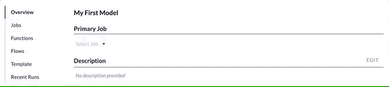

Recent Runs
Each time you run a Job, the status information associated with the execution is saved for a period of time. These Recent Runs can be reviewed in this section. Clicking on an item will reveal the detailed status information for the selected run.
See also: Job Status, Run a Job